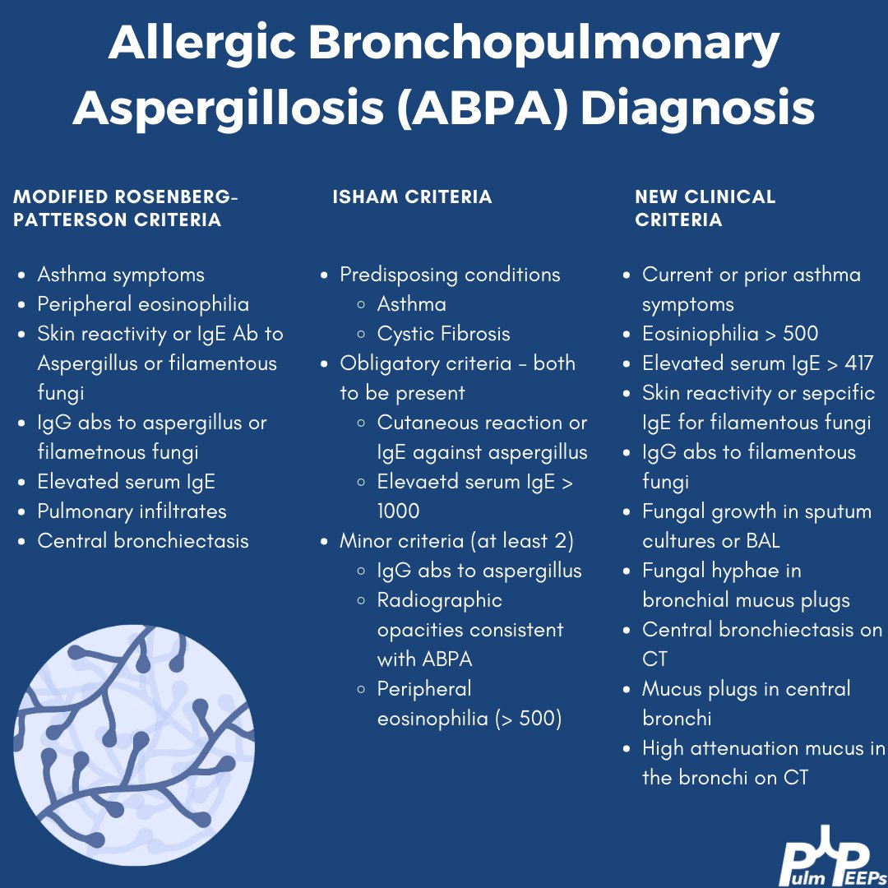
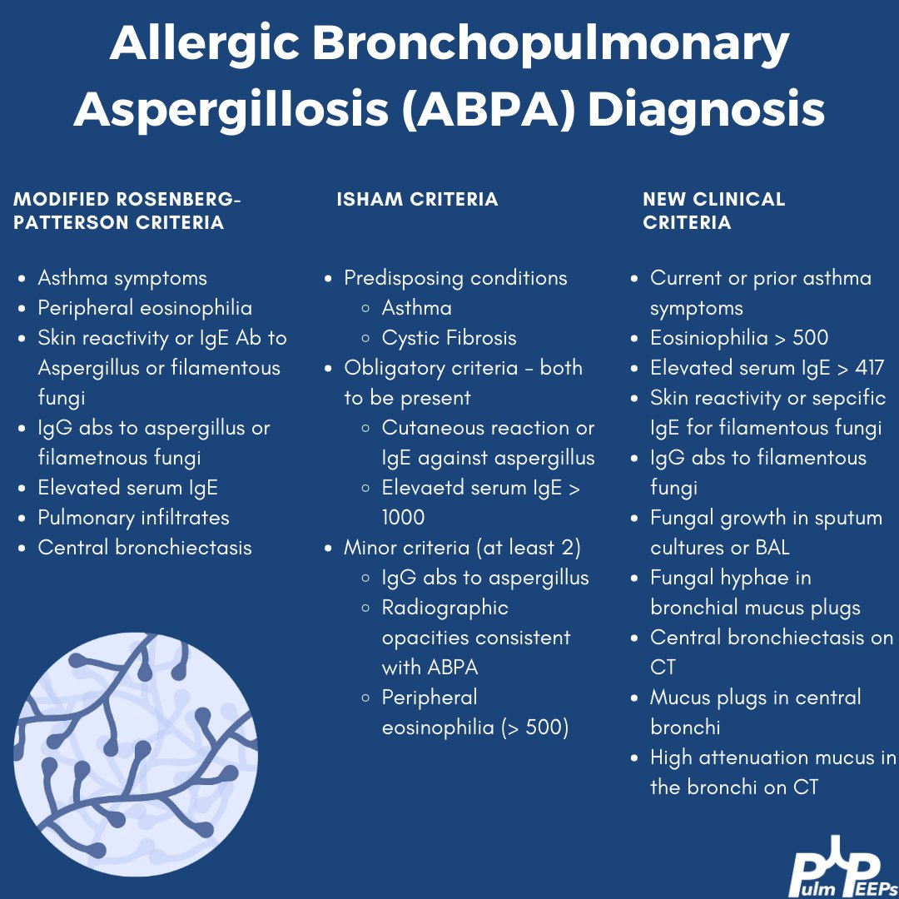

ABPA is a
Diagnostic Criteria
ISHAM Dx
ASthma Pulm infiltrates Skin and serum precipitns to aspergillus total IgE and aspergillus specific IgE > 1000 increaed peripheral eosinophilia

ABPA is a
ISHAM Dx
ASthma Pulm infiltrates Skin and serum precipitns to aspergillus total IgE and aspergillus specific IgE > 1000 increaed peripheral eosinophilia
